HOW TO USE / アプリの使い方
Spinglishの使い方
iPhoneアプリ Spinglish の使い方を、画面の順に説明します。ボタンの名前は、アプリに表示されるとおりに「」で書いています。画面写真は初期設定のデザイン「Editorial」のものです。デザインを「ベーシック」にしている場合は、見た目が少し異なります。
01はじめる
サインイン
App Storeからアプリをダウンロードして開き、「Sign in with Apple」か「Googleでログイン」を選びます。練習の記録はアカウントに保存されるので、機種変更しても同じ方法でサインインすれば引き継がれます。
はじめの案内（5ページ）
はじめてサインインすると、5ページの案内が表示されます。「次へ」で進み、右上の「スキップ」で飛ばすこともできます。
- Spinglishへようこそ — アプリの流れ（お題を英語で話す → 話し終えると自動で止まり採点 → AIが採点・添削）を紹介します。
- デザインを選ぼう — 海外ファッション誌風の「Editorial」か、黒×金の「ベーシック」を選びます。あとからMy Pageで変えられます。
- いろいろな練習 — 5つの練習と、お気に入り・Recordsを紹介します。
- ニックネームを決めよう — 半角英数字3〜20文字で、ほかの人と同じ名前は使えません。空欄のままでもかまいません。
- まずは話してみよう — マイクのボタンを押して "Hello, nice to meet you!" と話してみます。途中でマイク・音声認識・通知の許可を求められるので、「OK」「許可」を押してください。うまく話せたら「最初の練習へ」で瞬間英訳に進みます。
プランを選ぶ
練習を始めるには、プランの登録が必要です。案内のあと「プランを選ぶ」画面が開きます。月額プランは初回7日間、週額プランは初回3日間の無料体験があります（対象者のみ）。無料体験中も、選んだプランの機能と1日の回数で練習できます。以前に購入したことがある場合は「購入を復元」を押してください。料金とプランの違いはプランと回数・解約をご覧ください。
02ホーム
アプリを開くと、最初にホームが表示されます。
- TODAY / MIN — 今日の練習時間（分）。下に「目標まで あと ◯分」が表示されます。目標はMy Pageの「1日の学習目標」で変えられます。
- DAYS・HOURS — これまでに練習した日数と、合計の練習時間です。
- 本日のセッション — 今日のAI英会話を始めます（本日のセッション）。
- PRACTICE — 瞬間英訳・シャドーイング・英語日記・英単語練習へ移動します。
練習時間は、練習の画面を開いている間だけ数えます。アプリを完全に閉じて開き直すと、ホームから始まります。
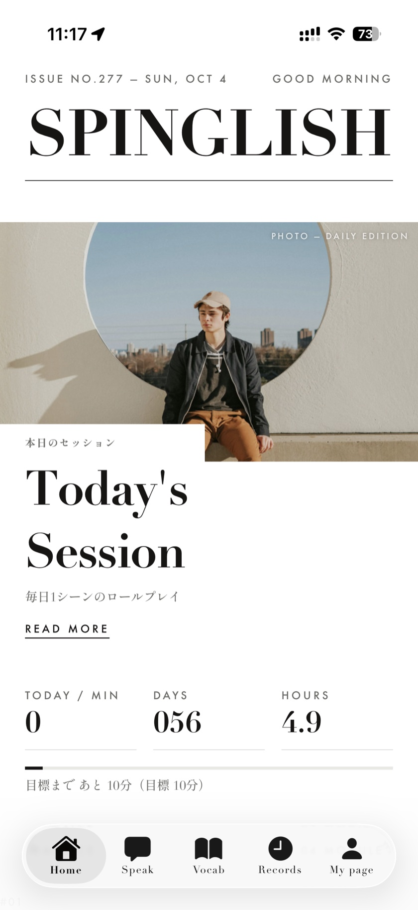
03瞬間英訳
日本語のお題を見て、英語で声に出す練習です。1回5問で、AIが採点・添削します。
- カテゴリを選ぶ — 「Speak」タブの「瞬間英訳」を開き、10のカテゴリ（日常会話・旅行・ビジネス・サッカー・野球・金融・柔術・精神世界・技術・ニュース・社会）から選びます。画面上部に「本日 残り ◯ 回」が表示されます。
- レベルを選ぶ — 「Lv.1 超初級」から「Lv.5 ネイティブ級」までの5段階です。各レベルに、合格した数と全お題数が表示されます。
- 「はじめる」を押す — 1問目が表示され、録音が自動で始まります。
- 英語で話す — 日本語のお題を英語にして声に出します。2.8秒ほど黙ると録音は自動で止まります（最長20秒。「停止」でも止められます）。
- 結果を見る — 意味が伝わればOK「伝わる英語です！」、伝わらなければNG「もう一歩。詳細を確認しましょう」と表示され、模範解答が音声で流れます。話す速さ（WPM）と、お題が出てから話し始めるまでの「瞬発力」も表示されます。
- 「詳細を確認」で振り返る — 「伝わりやすさ」「文法」「自然さ」の3つをS〜Dで評価し、その理由と添削（直した箇所を色で表示）を表示します。
- 次の問題へ — 「次の問題」で進み、5問目のあとは「結果を見る」で「セッション完了」画面へ。5問の結果をまとめて確認でき、「もう一度」で続けて練習できます。
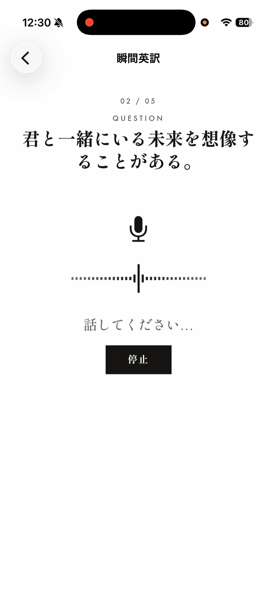
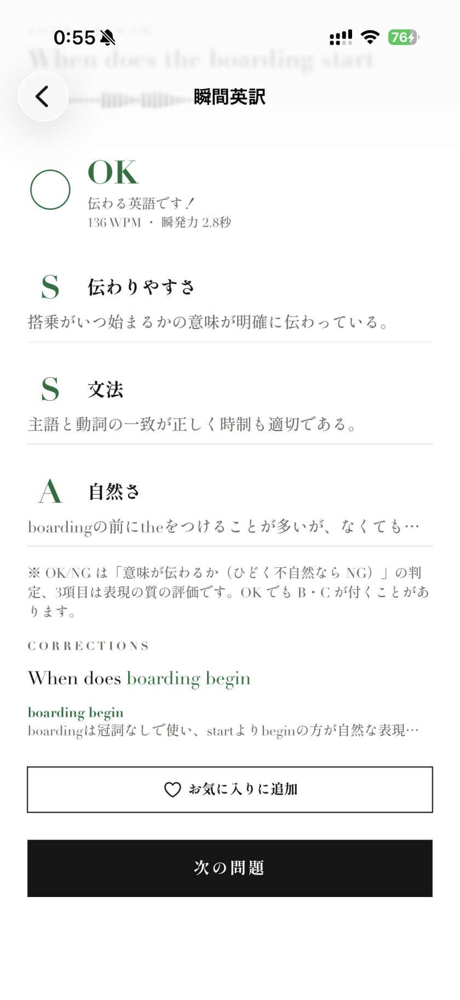
OK/NGの基準
OKになるのは、日本語の意味が伝わり、時制や動詞の形などのはっきりした文法の誤りがない場合です。模範解答と違う言い方でも、正しい英語なら OK になります。音声入力なので、句読点・大文字小文字・アポストロフィの有無は判定に影響しません。日本語からは決まらない単数・複数（a friend / my friends など）の違いも同様です。発音は評価しません。
知っておくと便利なこと
- 「判定を変更」— OK/NGに納得がいかないときは、自分で切り替えられます。
- 英単語をタップ— 「発音を聞く」「辞書で調べる」が使えます。
- 「お気に入りに追加」— 気に入ったお題を保存して、Recordsで見返せます。
- 「合格した問題を出さない」（カテゴリ画面・初期設定ON）— まだ言えない問題に集中できます。合格した問題は、レベル画面の「合格済みの問題」で模範解答と一緒に見返せます。
- 「採点前に確認する」（初期設定OFF）— ONにすると、認識された英文を確認してから「もう一度言う」か「採点する」を選べます。認識ミスは「タップで修正」で直せます。
- 途中で中断したとき— 同じ日のうちなら「前回のセッションの続きがあります」から再開できます（回数は消費しません）。
- 回数の数え方— 1問でも採点されると、途中でやめても1回として数えます。
04本日のセッション（AI英会話）
今日のシーンで、AIと5往復の英会話をします。1日1回で、毎日ちがうシーンが出ます。ホームまたは「Speak」タブの「本日のセッション」から始めます。
- AIの英語を聞く — AIのセリフが音声で流れ、終わると自動で次に進みます（「次へ」でも進めます）。
- 英語で答える — 「これを英語で言ってみよう」と日本語が表示され、「まもなく録音します…」のあと録音が始まります。話した英文は「タップで修正できます」。「もう一度言う」か「送信」を選びます。
- 結果を見る — 5往復が終わると「AIが採点・分析中…」のあと、各ターンの評価（伝わりやすさ・文法・自然さ）、模範解答、話す速さと、セッション全体へのアドバイスが表示されます。
- 復習する — 「復習する（英文を見て音読）」で、英文を読み上げる練習ができます（1日1回）。
本日のセッションは、瞬間英訳と同じく1日の練習回数を1回使います（1ターンでも送信すると1回）。今日の分を終えると「本日のセッションは完了しました」と表示されます。
05シャドーイング
お手本の英語音声に続いて、同じように話す練習です。イヤフォンの使用をおすすめします。
- レベルとお手本を選ぶ — 入門・初級・中級・中上級・上級から選び、「お手本を選ぶ」の一覧から1つ選びます。
- お手本を聴く — スピーカーのボタンで再生します。「リピート ON」にすると、1秒あけてくり返し再生します。
- 録音する — 「AI評価を受ける」を選んで「はじめる」。お手本が流れたら「録音して言ってみる」で、お手本に重ねて話します。お手本が終わると少しして自動で止まります（「停止」でも止められます）。
- 結果を見る — 再現度（%）と、「評価」「違い」「発音アドバイス」が表示されます。「自分の録音を聞く」でお手本と聴き比べられます。
お手本ごとに、自分の感覚で習熟度「できた」「もう少し」「まだまだ」を付けられます（もう一度タップで解除）。一覧の色の印と、レベルごとの「できた ◯/◯」で進み具合が分かります。AI評価は1日にスタンダード2回、アドバンス・ファウンダーズ4回です。「AI評価を受ける」をオフにすれば、回数を使わずに練習できます。
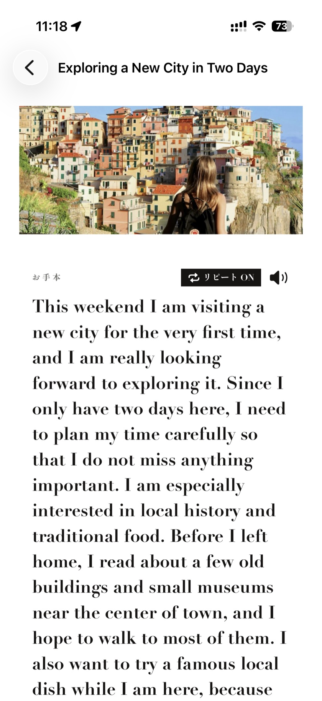
06英語日記
その日の出来事を英語で話して、日記に残します。1日1回です。
- 「新しい日記を書く」 — 「話して記録する」を押して、英語で話します。最長1分で、話し終えたら「止める」を押します（黙っても自動では止まりません）。
- 文字を確認する — 認識された英文は直せます。「話し直す」か「AI添削する」を選びます。
- 添削を見る — AIが付けたタイトル、「修正版（最小限）」「ネイティブ版」、「重要な添削」が表示されます。「日記を保存」で保存します。
「これまでの日記」から見返せます。キーワードでの検索や「日付で絞り込む」、「期間を指定してPDF出力」（1日分が1ページ）もできます。
07英単語・熟語
2,200語以上の英単語・熟語を、すべてネイティブ音声つきで練習できます。アドバンス・ファウンダーズで使えます。
- 並べ方を選ぶ — 「Vocab」タブの上の「品詞別」「テーマ別」で切り替えます。品詞別は名詞・動詞・形容詞・副詞・その他・熟語の6つ、テーマ別は暮らし・仕事・お金・旅行・移動・健康・体などの13テーマです。
- レベルを選ぶ — 入門から上級まで。各レベルに「覚えた数/全単語数」と進み具合のバーが表示されます（単語がないレベルは表示されません）。
- 練習の方法を選ぶ — 「発話で練習」（意味を見て英語で言う・10語）、「4択クイズ」（10問）、「カードで暗記」（タップで意味を表示）の3つから選びます。上の「覚えた単語を出さない」（初期設定ON）で、まだ覚えていない単語に集中できます。
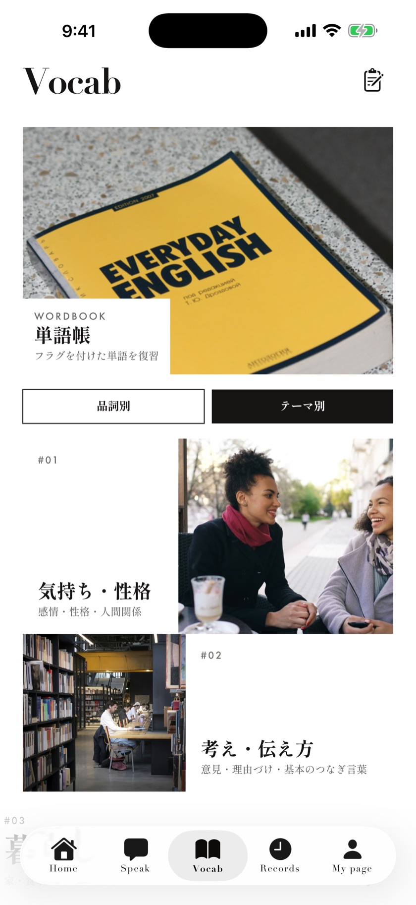
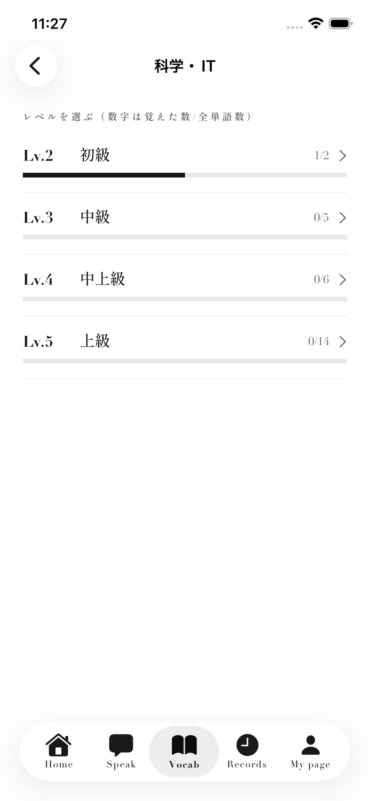
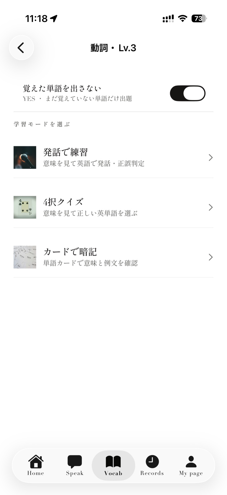
覚え具合のしるし
単語ごとに「覚えてない」（赤）「曖昧」（黄）「覚えた」（緑）のしるしが付きます。発話で正解すると「覚えた」、言えなかったら「覚えてない」。4択では2回以上正解で「覚えた」、1回正解で「曖昧」、不正解で「覚えてない」になります。練習の結果画面で自分で変えることもできます。
- 単語帳 — しるしを付けた単語の一覧です。しるしや品詞で絞り込めます。「覚えていない単語を復習」から、発話・カード・4択でまとめて復習できます（4択は4語以上必要）。
- 単語一覧 — 全単語を品詞（テーマ）とレベルごとに見られます。行の左の色の点をタップすると、しるしを変えられます（灰色はしるしなし）。
電車など声を出せない場所では、「4択クイズ」と「カードで暗記」が使えます。
08Records（学習の記録）
- 発話スピード — 平均の話す速さ（WPM・目標150）と、お題が出てから話し始めるまでの平均「瞬発力」（秒）。直近10日分をグラフで表示します。
- お気に入り — 瞬間英訳で保存したお題です。
- 本日のセッションの記録 — 日付・シーンごとに、評価と話す速さを見返せます。
- 瞬間英訳のセッション記録 — 終えたセッションの5問それぞれの回答・評価・添削を見返せます（1.3.7以降のセッション）。
- 瞬間英訳の間違い — NGだった問題の一覧です。「キーワードで検索」「日付で絞り込む」で探せます。
- シャドーイングの記録 — 再現度と、自分の録音を聞き直せます。
各一覧は「さらに表示」で続きを読み込みます。画面を下に引っぱると最新の状態に更新されます。
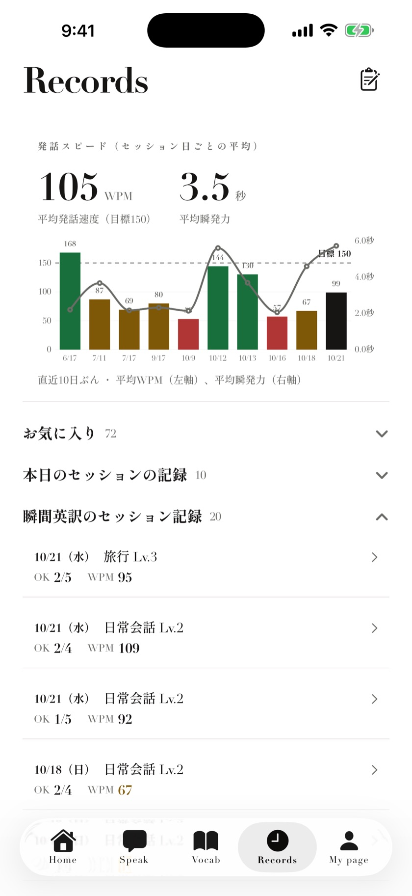
09My Page（設定）
- ニックネーム — 「編集」で変更できます。
- 1日の学習目標 — 5・10・15・20・30・45・60分から選べます。
- 練習リマインダー — 「毎日通知する」と「通知する時刻」（初期設定は21:00）。
- デザイン — Editorial（ライト・マイルド・ダーク）や、ベーシックの各色など10種類。好きな画像を背景にすることもできます。
- 効果音 — 「採点・達成の音を鳴らす」のオン・オフ。
- プラン — 今のプランと、今日の残り回数。「プランを変更」で変更できます。
- サポート・アカウント — お問い合わせや利用規約、「ログアウト」「アカウントを削除」。
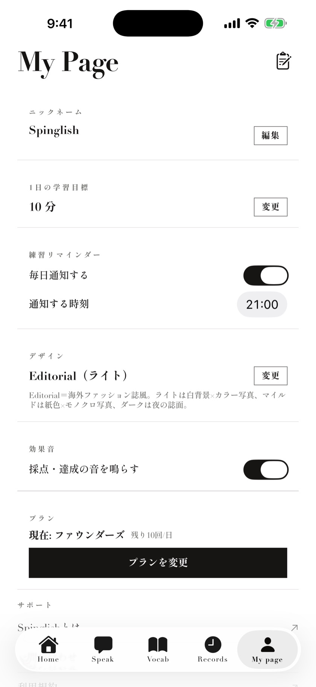
10文字を大きくする
アプリの文字は、iPhoneの文字サイズの設定に合わせて大きくなります（1.3.8以降）。
iPhone全体の文字を大きくする
iPhoneの「設定」→「画面表示と明るさ」→「テキストサイズ」のスライダーを右に動かします。
Spinglishだけ大きくする
- コントロールセンターに「テキストサイズ」（aA）を追加します。iOS 18以降はコントロールセンターの左上の「＋」→「コントロールを追加」、iOS 17は「設定」→「コントロールセンター」から追加します。
- Spinglishを開いた状態でコントロールセンターを開き、「テキストサイズ」を押します。
- 下の切り替えを「Spinglishのみ」にして、上下に動かして調整します。
レイアウトが崩れないよう、アプリの文字は標準の約1.35倍までの拡大です。大きな見出しや数字は、もとの大きさのままです。標準より小さくしても、アプリの文字は小さくなりません。使っている途中で大きさを変えると、新しい大きさで画面が作り直され、開いているタブの最初の画面に戻ります。
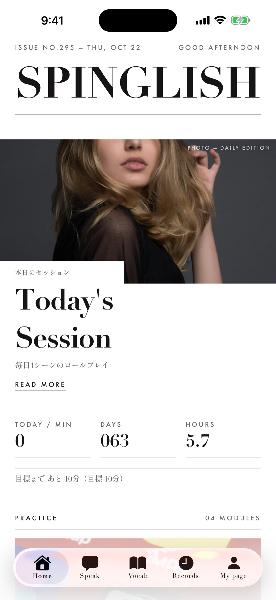
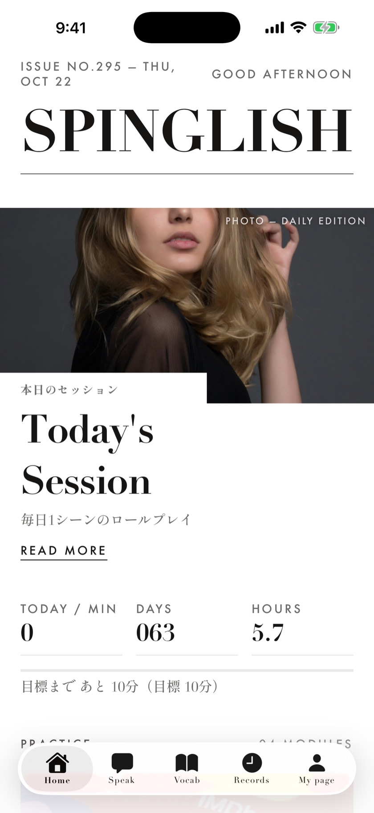
11改善要望を送る
Speak・Vocab・Records・My Pageの画面右上にあるクリップボードのアイコンから、開発者に要望を送れます（有料プランの方）。2,000文字まで書いて「送信する」を押してください。いただいた内容はすべて読んでいます。返信が必要な内容はお問い合わせからお送りください。
12プランと回数・解約
| スタンダード | アドバンス | ファウンダーズ | |
|---|---|---|---|
| 料金（税込） | 月額¥1,000 / 週額¥300 | 月額¥1,500 / 週額¥400 | 月額¥700（先着300人） |
| 1日の練習回数 （瞬間英訳＋本日のセッション） | 5回 | 10回 | 10回 |
| 本日のセッション | 1日1回（練習回数を1回使います） | ||
| シャドーイングのAI評価 | 1日2回 | 1日4回 | 1日4回 |
| 英語日記 | 1日1回 | ||
| 英単語・熟語 | なし | あり | あり |
回数は日本時間の日付が変わると戻ります。上限に達すると「本日の上限に達しました」などと表示されます。
- 無料体験 — 月額プランは初回7日間、週額プランは初回3日間（対象者のみ）。対象かどうかと請求日は、Appleの購入確認画面で確認できます。
- 解約 — iPhoneの「設定」→ ご自分の名前 →「サブスクリプション」→「Spinglish」から。無料期間が終わる24時間前までに解約しないと、自動で更新されます。
- ファウンダーズ — 先着300人限定で、契約を続けている間は月額¥700です。一度解約すると再加入できません。
- アカウントの削除 — My Pageの「アカウントを削除」から。削除してもサブスクリプションは自動では解約されないので、先に解約してください。
くわしい料金と条件は料金・無料体験をご覧ください。
13困ったとき
「マイクと音声認識の許可が必要です」と表示される
iPhoneの「設定」→「Spinglish」で、「マイク」と「音声認識」をオンにしてください。
「認識できませんでした」と表示される
周りが静かな場所で、iPhoneに近づいて話してみてください。「もう一度」で録音し直せます。
話している途中で録音が止まってしまう
瞬間英訳は、2.8秒ほど黙ると話し終わったと判断して録音を止めます。考えながら話すときは、言葉をつなぐようにしてみてください。「採点前に確認する」をオンにすると、採点の前に「もう一度言う」を選べます。
認識された英文が、話した内容と違う
固有名詞などは聞き取りを間違えることがあります。瞬間英訳では「採点前に確認する」をオンにすると、「タップで修正」で直してから採点できます。本日のセッションと英語日記でも、送信前に英文を直せます。
「採点できませんでした」「詳細を取得できませんでした」と表示される
通信状況を確認してください。詳細が表示されないときは「再試行」を押すと読み込み直します。続く場合はアプリを開き直し、ログインしたままか確認してください。
英単語で「このレベルの単語はすべて覚えました！」と表示される
「覚えた単語を出さない」がオンになっているためです。オフにすると、覚えた単語も含めて復習できます。
英語日記で「本日の日記は作成済みです」と表示される
英語日記は1日1回です。まだ書いていないのに表示される場合は、通信が不安定な可能性があります。通信を確認して画面を開き直してください。
プランを購入したのに使えない・機種を変えた
My Pageの「プランを変更」から「購入を復元」を押してください。練習の記録は、同じ方法（Apple または Google）でサインインすれば引き継がれます。
14お問い合わせ
解決しないときや、返信が必要なご相談は、お問い合わせフォームからお送りください。メール（spinglish-support@yensense.com）でも受け付けています。